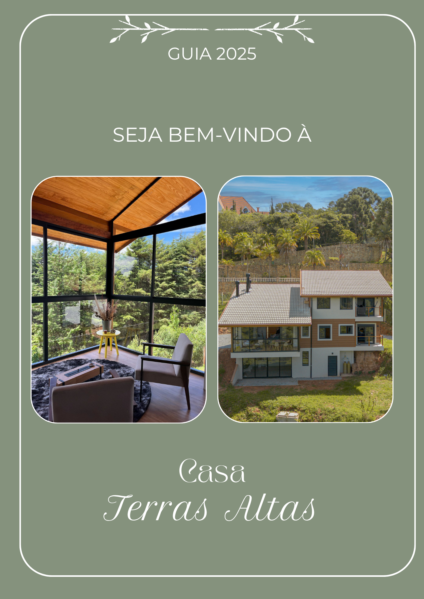
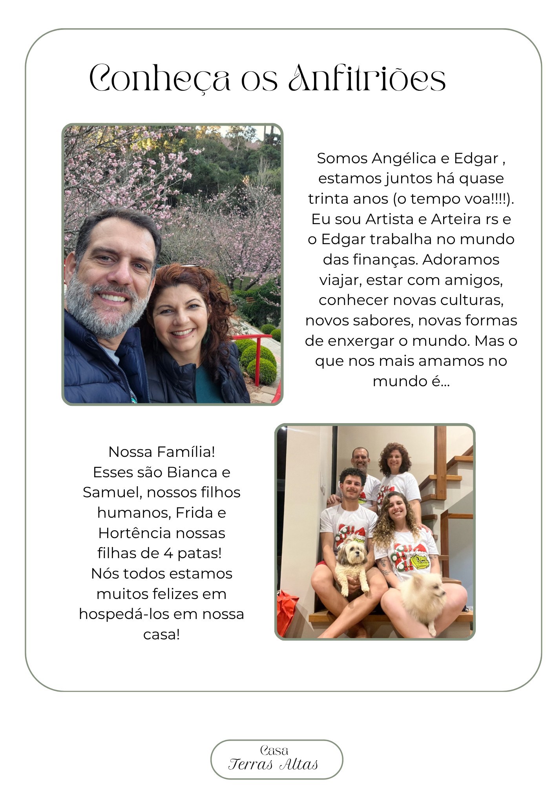
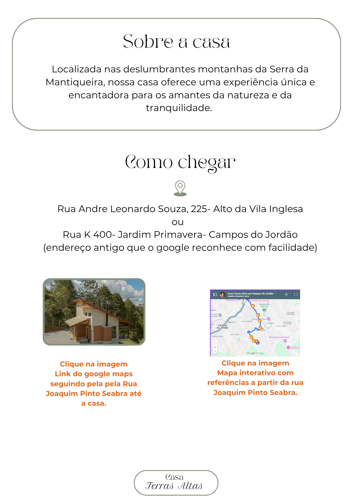
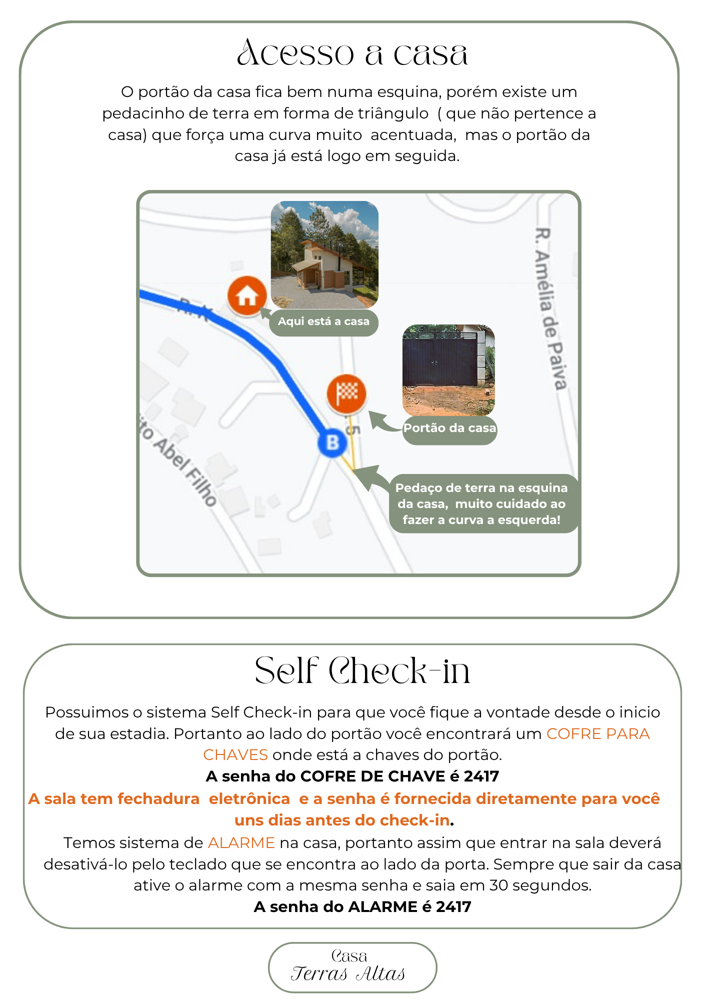
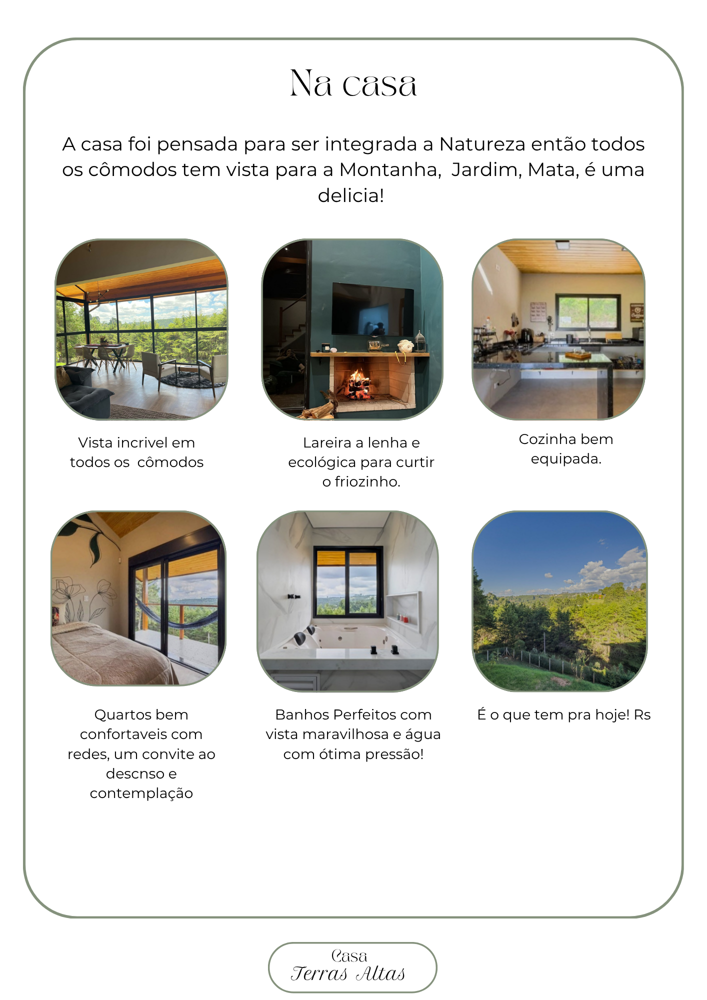

Conheça os Anfitriões
Somos Angélica e Edgar, juntos há quase 30 anos. Adoramos viajar, conhecer novas culturas e sabores. Nossa família inclui nossos filhos humanos, Bianca e Samuel, e nossas filhas de 4 patas, Frida e Hortência.
Na Casa
A casa foi pensada para ser integrada à natureza. Todos os cômodos possuem vista para a montanha e mata local.





Como Chegar
Rua André Leonardo Souza, 225 - Alto da Vila Inglesa
Dica: o endereço antigo (Rua K, 400 - Jardim Primavera) é melhor reconhecido pelo Google Maps.
Lembretes Importantes
- Check-in: 16h | Check-out: 12h.
- Wi-fi: rede FCD_Campos — a senha está no folheto sobre a mesa da sala.
- Aquecimento: é a gás. Registro esquerdo para água quente.
- Elétrica: tomadas pretas são de 20A (use apenas para aquecedores a óleo).
- Segurança: desligue cafeteiras e aquecedores ao sair.
- Pets: bem-vindos! Recolha as fezes e não deixe subir na banheira.
Estamos sempre à disposição!
Instagram @casaterrasaltas_camposdojordao
Avalie-nos no Google Maps
Telefones: (11) 99420-6875 | (11) 99417-6186